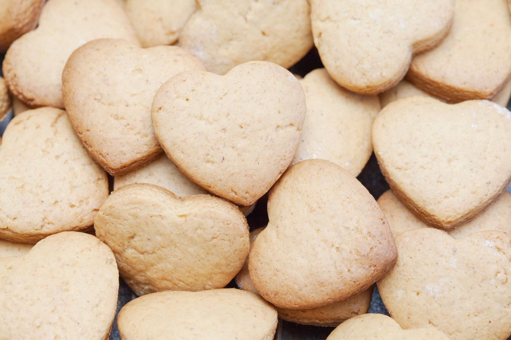

Heart Shaped Cookies!
Cooking homemade cookies can be a fun and joyful activity, so why not bake some for your family this week? We have an easy recipe for you to try!
This delicious cookie recipe is a simple take on a family tradition. When making cookies, it's a good idea to make your batter room temperature before starting. If you don't have cookie cutters, a cookie scoop or your hands will do! This dough cooks well when flat or in balls. The flat molding method produces thin cookies with crisp edges that hold their shape. You can try varying the amount of batter or add-ins, depending on your preferences.
We are very happy to share this recipe with you all, it was our next-door neighbor's favorite. We're not sure where you are, Chuck, but on the off chance you see this website, just know that your friends in Bakersville miss you and you can bake these cookies anytime you miss us. We're sure there's an oven wherever you are, unless you're on some desert island or something. Haha, that would be silly.
Hart Cookie Recipe
My Aunt Frances would have these warm and crisp cookies all the time, even if we surprised her with a visit! Family members just recently compared their version of her famous cookie recipe only to find that each of us had a different variation! We all concluded that getting accurate measurements from her is next to impossible. :) The real life source of this recipe is our accounting expert on the MBA team, Eleonora Carr and her Aunt Frances. <3
Prep: 20 min
Inactive: 30 min
Cook: 15 min
Total: 1 hr 5 min
Yield: 30 cookies
Ingredients
- 2 cups flour
- 2 eggs
- 3/4 cups sugar
- 2 tsp baking powder
- 1/2 cup Crisco or butter
- 1 tsp vanilla
- Pinch of salt
Instructions
- Cream butter and add flour, salt, and baking powder.
- Beat eggs, sugar, and vanilla. Mix together.
- Shape cookie dough into hearts on cookie sheets then chill for 30 minutes.
- Bake at 300 degrees for about 20 minutes or until slightly brown. Let cool.
Nutrition
| Calories | Carbs | Fat | Protein | Cholesterol | Sodium |
|---|---|---|---|---|---|
| 160 cal | 25 g | 15 g | 3 g | 35 mg | 160 mg |